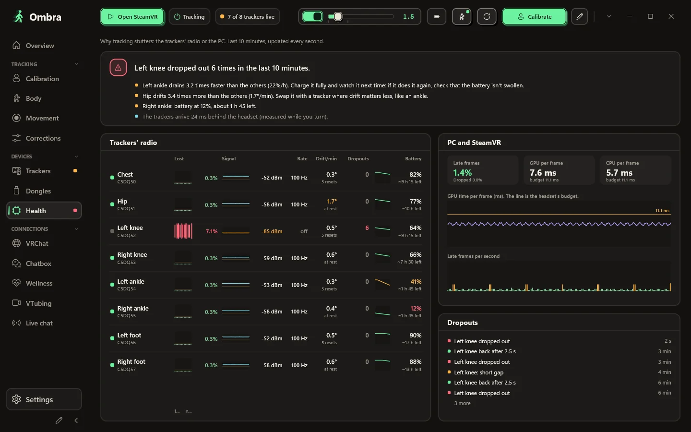
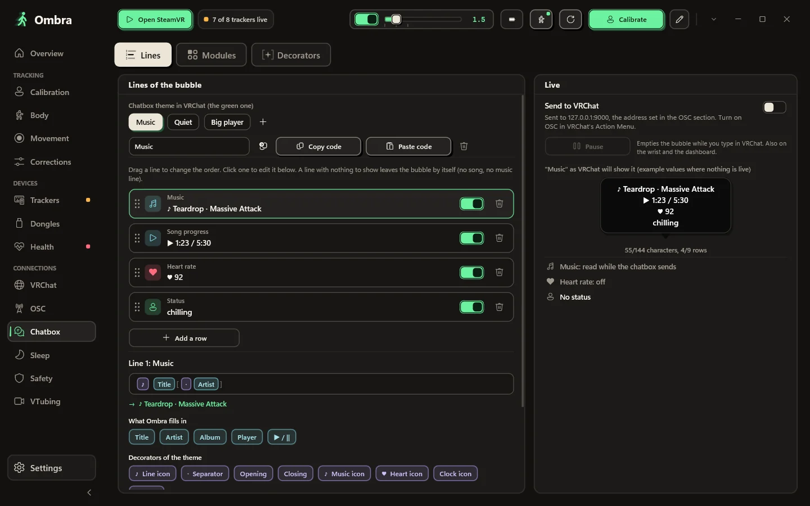
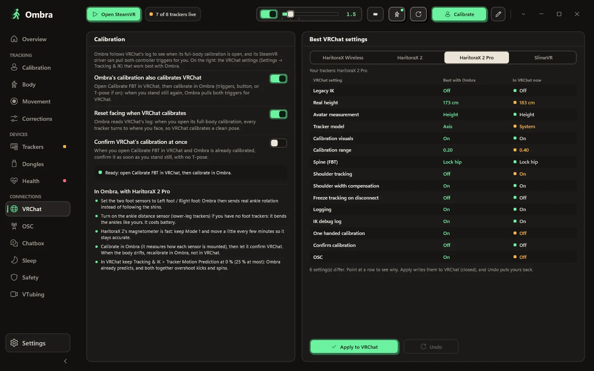
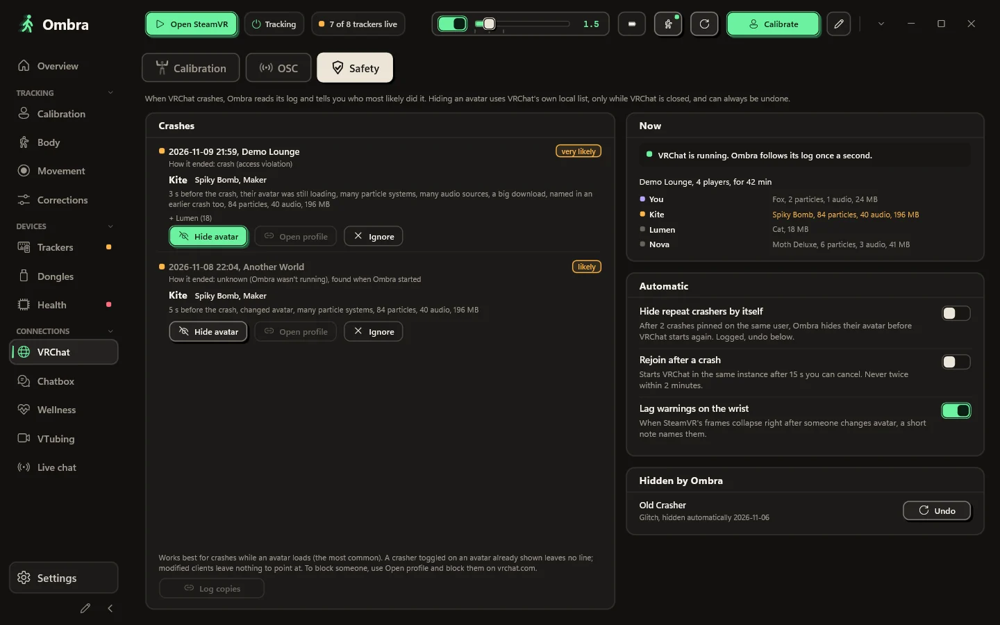
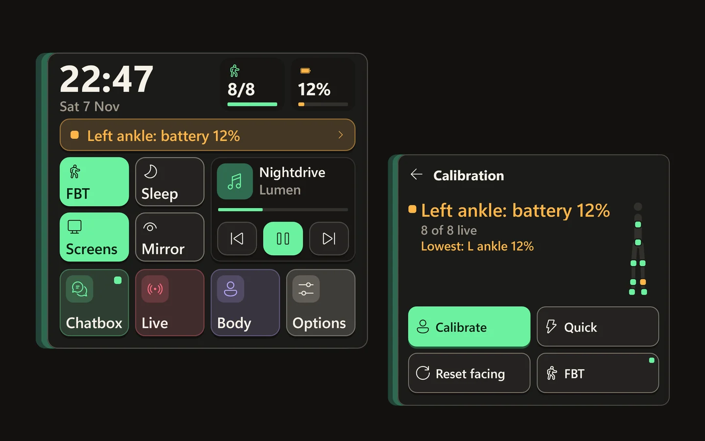
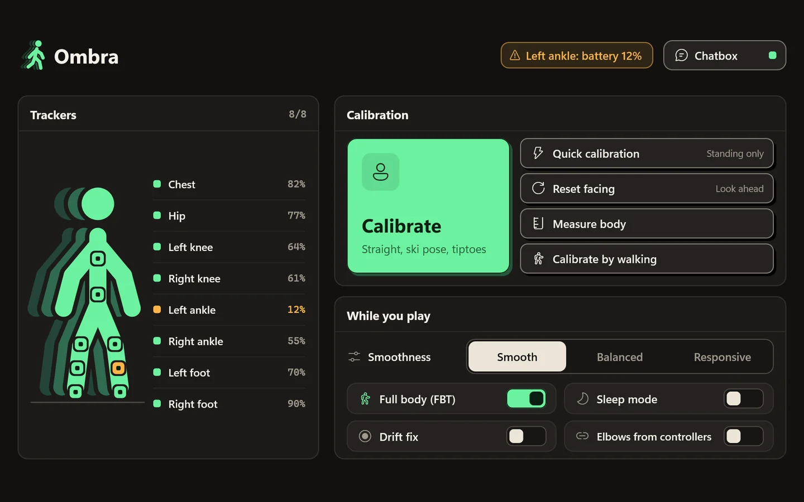
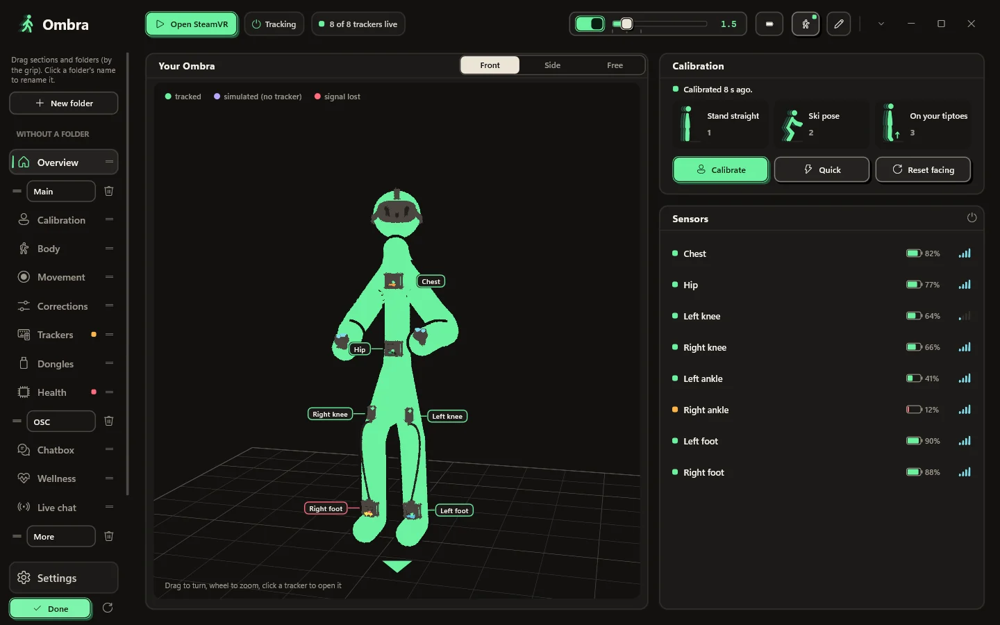
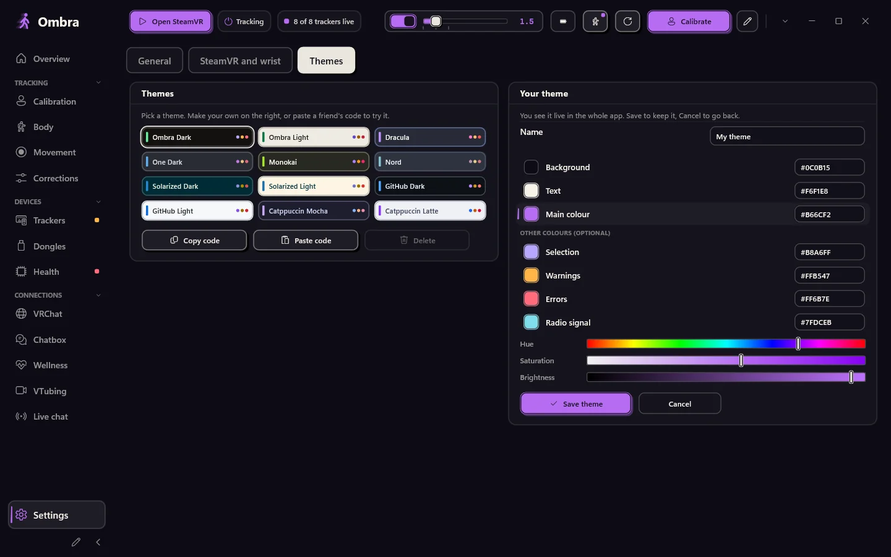

Ombra
Every version comes with notes on what changed and how to update.
One free Windows app for your whole VR session: full-body tracking for HaritoraX and SlimeVR-compatible trackers, a VRChat chatbox with your music and heart rate, protection from crashers, and panels on your wrist.
Ombra runs HaritoraX and SlimeVR-compatible trackers in SteamVR on its own, with no other app. It builds your body from the sensors and your headset, smooths every tracker and corrects drift while you play.



The body Ombra builds from your sensors and headset, in front, side or free 3D view. Each tracker shows whether it is tracked, simulated or out of signal.
Stand straight, bend into a ski pose, then rise on your tiptoes with foot trackers. Ombra shows which body part to check when something is off.
Smooth, Balanced, Responsive or Off, or any level on a slider. Give a single tracker its own style, for example calmer feet.
Drift correction runs while you play, and a live table shows what it is doing on each body part.
Your body stays believable: feet stay above the floor, planted feet don't slide, knees never bend backwards.
Serial, firmware, dongle slot, battery voltage, signal on both ends, magnetometer state and the real update rate.
A GX2 has two slots; a GX6 has three radio modules with two slots each. Ombra shows every module, the tracker in each slot and its channel.
Update trackers over Bluetooth and dongles over USB with Shiftall's original firmware files, unmodified.
When tracking stutters, the Health page shows where it comes from: each tracker's lost packets, signal and real update rate, next to the frames SteamVR dropped.
Pick a look, choose what it shows and in which order. Ombra keeps it inside the bubble and never floods it.


Start from a look: eight real VRChat bubbles drawn with your own lines, from clean to kawaii. Switch modules on and off, move them up or down, pick one of twelve dividers VRChat really draws, or put everything on one row.
T7RK-1J85-6, no server in betweenOmbra's calibration also calibrates VRChat, and the full-body settings VRChat recommends for your trackers are one click away, with undo.
VRChat notes who joins and which avatar they load. Ombra reads that log on your PC, so after a crash you see the likely crasher, and their avatar is one click away from hidden.

What you need while you play is on your wrist and in the SteamVR dashboard.


Look at your wrist and it fades in: a big clock, how many trackers are live and the emptiest battery, the calibration state, four labelled switches (full body, sleep, screens, mirror) and your music. Your PC's notifications show up there too. Look away and it's gone.
Every tracker with its battery, big buttons for calibrate and reset facing, and the switches you change while you play.
Arrange the sidebar and pick your own colours. One click puts the original back.


Press the pencil at the bottom of the sidebar: make folders, name them, and drag sections and whole folders wherever you like.
Settings → Themes → Your theme: pick a background, a text colour and a main colour, with bars or hex codes. Ombra works out the rest. You see it live in the whole app and in the panels in VR; save it, or cancel to go back.
No browser inside, 12 colour themes and your own. SteamVR starts Ombra, and it waits in the tray with a panel for your trackers.
The buttons you use most, in the order you want.
Ombra tells you when a new version is out and never updates while SteamVR runs.
Optional: after a restart, Ombra calibrates by itself once you stand still.
Here is everything Ombra does with the internet, and everything it doesn't.
Ombra changes often. Here is what the latest version brings, straight from its release notes, and what came before it.
Ombra
Every version comes with notes on what changed and how to update.
Windows 10 or 11 (64-bit) and SteamVR. HaritoraX 2, 2 Pro or Wireless with a GX dongle, or SlimeVR-compatible trackers.
One file, Ombra-Setup.exe. The button below always gets the latest version.
Only one app can use the dongles at a time.
It needs no admin rights and registers the SteamVR driver. If Windows warns you, see the questions below.
Turn on your trackers, start SteamVR, put them on and press Calibrate.
Latest version. All releases and changes
Every release is scanned with Microsoft Defender and uploaded to VirusTotal: see the report.
If something is missing, ask on GitHub.
No. Ombra reads the dongles itself, pairs trackers and updates firmware with Shiftall's original files. Keep other tracker apps closed while Ombra runs.
HaritoraX 2, 2 Pro and Wireless through GX2 or GX6 dongles, and SlimeVR-compatible trackers over Wi-Fi or a USB receiver, for example Butterfly and Smol Slime. Base-station trackers such as Vive trackers can be lined up with a Quest, and Ombra can also smooth other IMU trackers already in SteamVR. HaritoraX 1 (wired) is not supported.
Yes. With a PC, through SteamVR, wired or wireless. With VRChat running on the Quest itself, Ombra sends your body over OSC from your PC, without SteamVR.
The installer is not code-signed yet, so SmartScreen doesn't recognise it. Click More info, then Run anyway. The setup installs into your user folder and needs no admin rights.
The setup installs Ombra's own SteamVR driver. Your trackers appear in SteamVR with their roles already set (hip, chest, knees, feet, elbows), and SteamVR starts Ombra for you.
No. Lighthouse devices, headsets and controllers are never modified. The driver only creates Ombra's virtual trackers and, only if you turn it on, smooths other IMU trackers.
No. Many people use Ombra just for the chatbox, the VRChat tools and the body made up from the headset. Choose No trackers in the setup and Ombra never asks for a dongle.
Yes. Run Ombra.exe --demo for eight demo trackers on a GX2 and a GX6. The demo never touches COM ports, Bluetooth, SteamVR or your settings.
The app and this site are in English, Italian, German, French, Spanish, Brazilian Portuguese, Japanese, Korean, Simplified Chinese and Russian. Ombra picks your Windows language and you can change it in Settings.
No. Ombra is an independent project, free to download and use. The source code is not published; you can propose features, extensions and translations on GitHub.
Yes. Ombra is made by one developer with AI tools, mainly Claude by Anthropic, for research, code, testing and translations. The developer decides what Ombra does and approves every release. No AI image generators: the screenshots are real captures of the app. Inside Ombra, only the optional speech to chatbox uses AI: the Whisper model runs on your PC and your voice never leaves it.
Ombra-Setup.exe is downloading
When Windows says it protected your PC, click More info, then Run anyway. The installer isn't code-signed yet, so SmartScreen doesn't know it.
If Ombra works well for you, a star on GitHub helps other people find it.
Star on GitHub